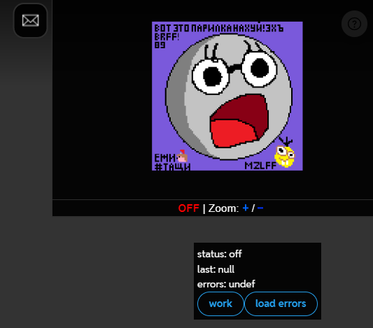

1. Скачайте расширение TamperMonkey:
Скачать2. После установки расширения, скачайте скрипт на мини-карту (Потом периодически её обновляйте):
Скачать3. Обновите страницу с Плейсом (CTRL+F5 или SHIFT+F5).
4. Мини-карта установлена. Обратите внимание что вам нужно периодически обновлять этот скрипт.
